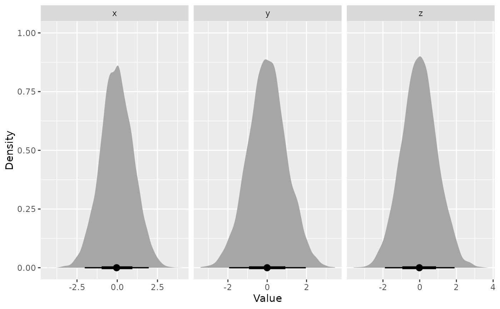

Create a plot of the posterior distributions from a nested sampling run, or trace the evolution of the discarded live points along the log prior volume.
Arguments
- x
(ernest_run) An ernest_run object.
- ...
Arguments passed on to
as_draws_rvars.ernest_rununits(case-sensitive string) The scale in which to return the sampled points:
"original": Points are expressed on the scale of the prior space."unit_cube": Points are expressed on the scale of the (0-1)-unit hypercube.
radial(logical) Whether to return an additional column
.radial, containing the radial coordinate (i.e., the squared sum of squares) for each sampled point.
- type
(case-sensitive string) The type of plot to create.
"density": Shows the posterior density of each distribution."trace": Shows the distribution of points along estimates of the log prior volume.
- vars
<
tidy-select> The variables to plot from the run. If leftNULL, every variable is plotted.- plot
Logical, whether to return a
ggplotof the visualization, or atibbleof the data used to create the plot.
See also
plot() for visualizing the evidence estimates from an ernest_run.
Examples
# Load example run
library(ggdist)
data(ernest_run_example)
# Plot posterior distributions of the parameters
visualize(ernest_run_example, type = "density")

# Plot the trace of the radial coordinate in unit scale
visualize(
ernest_run_example,
type = "trace",
vars = ".radial",
units = "unit_cube",
radial = TRUE
)